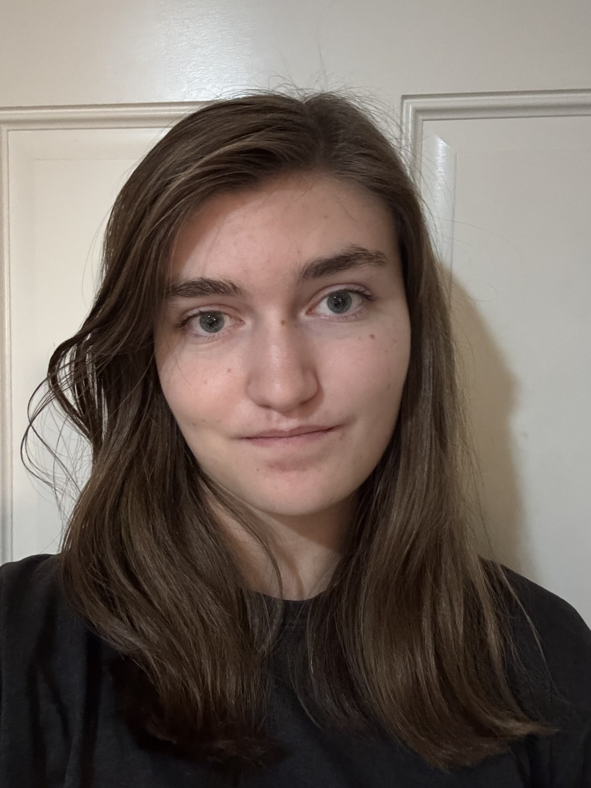

Hello, I am a Freshman at Indiana University of Indianapolis studing Video Game Design and Development. I have been interested in art since I was a little kid and I knew I always wanted to go into some sort of art field. I had never liked the idea of only being good at one thing, so I spent most of my time learning all sorts of different artstyles and different art mediums. I have learned that I most like watercolors and digital art and that I don't like oil paints.
I do a lot of digital illustrations and I have learned on a lot of different programs. The one I always come back to is Autodesk Sketchbook and that is the program I do most of my art on. I am always open to learning new things and working with new people. I will always give it my all and see my job through till the next project.
When I was a kid and decided upon this major, I was thinking about how much I love video games. Video games are very inspiring to me, just like any creative media they can make you feel completely different. If you were angry, they can put a smile on your face. If you were happy, they can make you cry. They have that strange power over people because they become invested. I want to show people different emotions and influence their current mood. I'll do that with my art and stories.